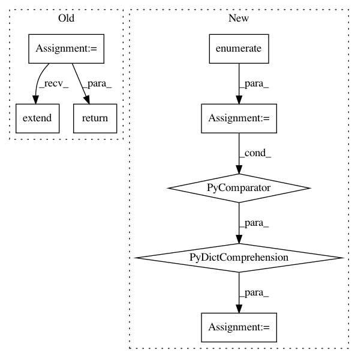

249c21346208b682d128e28fe4480262f8b76cd8,torch/distributed/optim/zero_redundancy_optimizer.py,ZeroRedundancyOptimizer,state_dict,#ZeroRedundancyOptimizer#,393
Before Change
start = 0
for i, s in enumerate(self._all_states):
param_groups.extend(s["param_groups"])
end = start + len(s["param_groups"])
partition.append((start, end))
start = end
return {
"state": [s["state"] for s in self._all_states],
"param_groups": param_groups,
"partition": partition,
"local_state_dict": False,
}
@staticmethod
def rank_local_state_dict(rank: int, state_dict: dict) -> dict:
Returns the local_state_dict for a given rank.
After Change
for local_pg, global_pg in zip(
s["param_groups"], self.partition_parameters()[rank]
):
local_index_to_param_id = {
i_param: id(global_pg["params"][i])
for i, i_param in enumerate(local_pg["params"])
}
for local_param_index in local_pg["params"]:
// Update the state, if any
if local_param_index in s["state"].keys():
In pattern: SUPERPATTERN
Frequency: 3
Non-data size: 8
Instances
Project Name: pytorch/pytorch
Commit Name: 249c21346208b682d128e28fe4480262f8b76cd8
Time: 2021-02-27
Author: benjamin.lefaudeux@gmail.com
File Name: torch/distributed/optim/zero_redundancy_optimizer.py
Class Name: ZeroRedundancyOptimizer
Method Name: state_dict
Project Name: NeuroTechX/moabb
Commit Name: 8d66949a4703a04df75e8ab836c9eb22c26ecc09
Time: 2018-04-03
Author: alexandre.barachant@gmail.com
File Name: moabb/datasets/bnci.py
Class Name:
Method Name: _load_data_001_2015
Project Name: NeuroTechX/moabb
Commit Name: 8d66949a4703a04df75e8ab836c9eb22c26ecc09
Time: 2018-04-03
Author: alexandre.barachant@gmail.com
File Name: moabb/datasets/bnci.py
Class Name:
Method Name: _load_data_001_2014